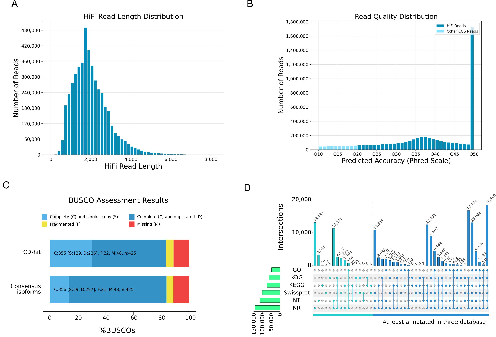

Nr(NCBI non-redundant protein sequences)是NCBI官方的蛋白序列数据库，它包括了GenBank 基因的蛋白编码序列，PDB(Protein Data Bank)蛋白数据库、SwissProt蛋白序列及来自PIR（Protein Information Resource）和PDF（Protein Research Foundation）等数据库的蛋白序列。
Swiss-Prot(A manually annotated and reviewed protein sequence database)搜集了经过有经验的生物学家整理及研究的蛋白序列。详见 http://www.ebi.ac.uk/uniprot/。
KEGG是Kyoto Encyclopedia of Genes and Genomes的简称，是系统分析基因产物和化合物在细胞中的代谢途径以及这些基因产物的功能的数据库。KEGG是Kyoto Encyclopedia of Genes and Genomes的简称，是系统分析基因产物和化合物在细胞中的代谢途径以及这些基因产物的功能的数据库。它整合了基因组、化学分子和生化系统等方面的数据，包括代谢通路（KEGG PATHWAY）、药物（KEGG DRUG）、疾病（KEGG DISEASE）、功能模型（KEGG MODULE）、基因序列（KEGG GENES）及基因组（KEGG GENOME）等等。详见 http://www.genome.jp/kegg/。
ZMW（Zero-Mode Waveguides）孔，即零模波导孔。每一个SMRT Cell 中含有大量这种圆形纳米小孔，直径为50~100nm，该小孔利用了一种物理效应零模波导，外径比激发光波长小，当 DNA 分子进入小孔后，因激发光从孔底发出的光不能穿透小孔进入上方的溶液区，仅被限制在底部一个足以覆盖被检测 DNA 部分的区域，进而收集该区域的信号，将背景噪音降到最低。
Polymerase read
测序读段，指由DNA聚合酶沿着”套马环”模板链反应合成的核苷酸序列
Subread
测序读段，根据接头序列将Polymerase read打断后的序列，去除5´和3测序引物后的序列
number of full passes
指原始序列中存在两端均含有SMRT adapter的子序列个数
Reads of Insert （ROI）
比对后的一致性序列，当ZMW小孔中的Polymerase read被打断成多个subreads时，它们的一致性序列即是每个ZMW小孔的Reads of Insert(ROI)
是 Sequel II 三代测序平台推出的兼顾长读长和高准确度的测序序列，HiFi reads 具有 >99.9% （Q20）单分子 reads 准确度的准确率。
3.1.1 Overview
本研究基于PacBio Sequel II 平台共产生了75.66Gb的全长转录组数据，经过去除接头序列，去除低质量序列后，我们检测到了38,696,058条Subreads，Subreads的N50达到2164bp，平均长度达到了1955bp，筛选满足number of full passes >= 1,序列准确性大于0.9的subreads得到一致性序列，最终得到4,714,912条高质量的ROI （Figure 4 A and B），这些ROI被称为High fidelity reads （HiFi reads）经过统计，HiFi reads的长度范围约为300-7000，均值为1997bp. 质控的结果显示，HiFi reads的错误检出路普遍较低，均值为Q41（Table S4 Figure 4 B)。我们对HiFi reads进行分类，全长非嵌合转录本（full-length non-chimeric reads）占88.28%,这些全长非嵌合转录本的平均长度为1,947bp, N50为2,196bp，获得全长转录本后我们经过聚类和矫正最终得到324,703个高质量的转录本及4273个低质量的转录本。随后我们通过CD-hit对全长转录本去冗余最终得到了176643个高质量的非冗余转录本。此外，我们通过BUSCO软件使用绿色植物保守单拷贝基因数据库对黄精块茎的全长转录组组装数据进行了评估，结果表明在数据库中的425个单拷贝基因在我们的数据中有355/356(去冗余/全部)个基因是完整的，占比为84%（Figure 4 C, TableS4, TableS5），说明测序质量良好。

Figure 4 Overview of full-length transcriptome
Figure 2: Figure legend: Construction of the multi-flux full-length transcriptome of P. sibiricum. (A) Length distribution of HiFi reads. (B) Quality distribution of HiFi reads. (C) BUSCO evaluation of the transcriptome completeness. (D) Annotation of the full-length nonredundant isoforms to multiple databases.
为了确定这些isoform可能影响的代谢通路，我们对KOG、KEGG、GO数据库的注释进行了分类。在KOG数据库中，我们发现62,479 isoforms 被分到4个大类中，4大类下又分了25个小类，其中注释到cellular processes and signaling大类的isoform有15,947个，而该大类中注释最多的类别为Signal transduction mechanisms和intracellular trafficking,secretion,and vesicular transport。注释到metabolism大类的isoform有10,589个，注释最多的两个term为Transcription以及Translation ribosomal structure and biogenesis.注释到Information storage and processing的有9,359个,其中Carbohydrate transport and metabolism和Energy production and conversion，Poorly Characterized以及无法分类的共有26,557个。共有48,043个isoform被注释到GO数据库中，其中biological process term注释到，其中KEGG共注释到74,622个isoform，根据KEGG层级结构这些注释被分配到5个最高层级(top hierarchy)：Cellular Processes(3,450), Environmental Information Processing(2,363), Genetic Information Processing(17,533), Metabolism(24,555),Organismal Systems(2,083), 而聚集最多的次层级(Second hierarchy)为Translation,有13.8%的isoform被注释到与蛋白质翻译(Translation)的pathway有关，接下来是KEGG term: Folding, sorting and degradation，占到总数的10.8% (Figure S3). 我们对这些高质量的全长转录本进行CDS预测，结果表明72.5% (128,026)的isoform可以预测到CDS序列,这些CDS序列的长度在主要集中在300-4000 nt之间(Figure S4 A),除此之外我们还预测了这些非冗余全长转录本的编码能力，最终我们发现有41.5% (73,175)的转录本符合长链非编码RNA（lncRNA）的特征，在这些candidate lncRNA中，有39,867的转录本中可能有CDS区域，占非冗余全长转录本的22.6%，而33,308的转录本不具有预测的CDS区域(Figure S4 B)。大部分的lncRNA范围在300-4000 nt (Figure S4 C). 除此之外，还有8.7%的全长转录本既无法预测到CDS区域，也不属于lncRNA，这些非冗余转录本被称为Transcript of Unknown Coding Potential (TUCP)Cabili et al. (2011) (Figure S4 B).综上，这些数据证明在转录水平我们构建了丰富的，准确的转录本池（Transcript pool）为后续的黄精块茎的转录组研究。
4.讨论
4.1 我们通过三代全长转录组测序得到了高质量的黄精转录本信息。
由于缺乏参考基因组，通过转录组解析黄精块茎药用价值的研究只能通过无参转录组来进行，一部分研究基于Illumina平台的2代测序 Feng et al. (2022)Wang et al. (2017)，还有一些基于PacBio平台3代全长转录组测序 Liao et al. (2021) . 就测序质量而言，本研究subreads的N50达到了2164bp，高于二代测序的1532 bp Wang et al. (2017) 1528 bp, Feng et al. (2022) 略低于同样为三代测序的3166 bp Liao et al. (2021) 。本研究提供了高达176,643个非冗余序列，该数量要高于之前的黄精转录组鉴定的数量，Liao et al. (2021) 鉴定到87,251个unigene, Wang et al. (2017) 鉴定到51,461个unigene，少于 Feng et al. (2022) 鉴定到的575,977个。此外，就序列同源性注释而言，60%的非冗余基因注释到Asparagus officinalis的结论与之前的研究是一致的，但不同的是，Liao et al. (2021) 等人的研究中与黄精属(Polygonatum)同源基因最多的是P. cyrtonema 和P. multiflorum，而本研究中最多的是P. verticillatum和P. sibiricum，接下来才是P. cyrtonema 和P. multiflorum。综上，我们从不同年份黄精块茎的三代全长转录组数据中获得了丰富的转录本，和前人的研究相比，测序质量较高，注释无明显偏倚，为后续黄精块茎转录组研究提供了高质量的转录本数据库。
Cabili, Moran N., Cole Trapnell, Loyal Goff, Magdalena Koziol, Barbara Tazon-Vega, Aviv Regev, and John L. Rinn. 2011. “Integrative Annotation of Human Large Intergenic Noncoding RNAs Reveals Global Properties and Specific Subclasses.”Genes & Development 25 (18): 1915–27. https://doi.org/10.1101/gad.17446611.
Feng, Tinghui, Yujie Jiang, Qiaojun Jia, Ruilian Han, Dekai Wang, Xuemin Zhang, and Zongsuo Liang. 2022. “Transcriptome Analysis of Different Sections of Rhizome in Polygonatum Sibiricum Red. And Mining Putative Genes Participate in Polysaccharide Biosynthesis.”Biochemical Genetics 60 (5): 1547–66. https://doi.org/10.1007/s10528-022-10183-x.
Liao, Dengqun, Ruipeng An, Jianhe Wei, Dongmei Wang, Xianen Li, and Jianjun Qi. 2021. “Transcriptome Profiles Revealed Molecular Mechanisms of Alternating Temperatures in Breaking the Epicotyl Morphophysiological Dormancy of Polygonatum Sibiricum Seeds.”BMC Plant Biology 21 (1): 370. https://doi.org/10.1186/s12870-021-03147-7.
Wang, Shiqiang, Bin Wang, Wenping Hua, Junfeng Niu, Kaikai Dang, Yi Qiang, and Zhezhi Wang. 2017. “De Novo Assembly and Analysis of Polygonatum Sibiricum Transcriptome and Identification of Genes Involved in Polysaccharide Biosynthesis.”International Journal of Molecular Sciences 18 (9): 1950. https://doi.org/10.3390/ijms18091950.